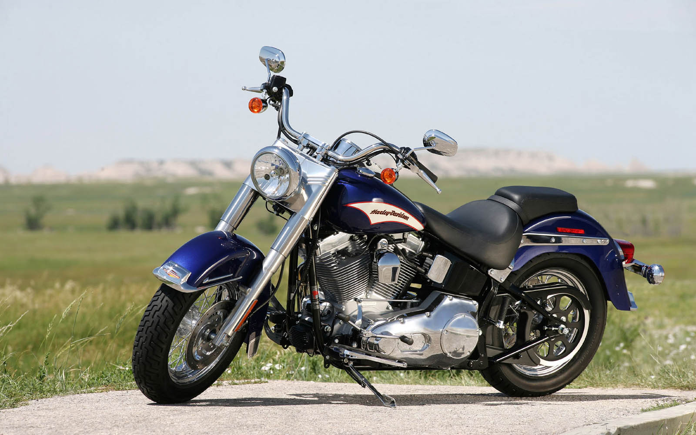
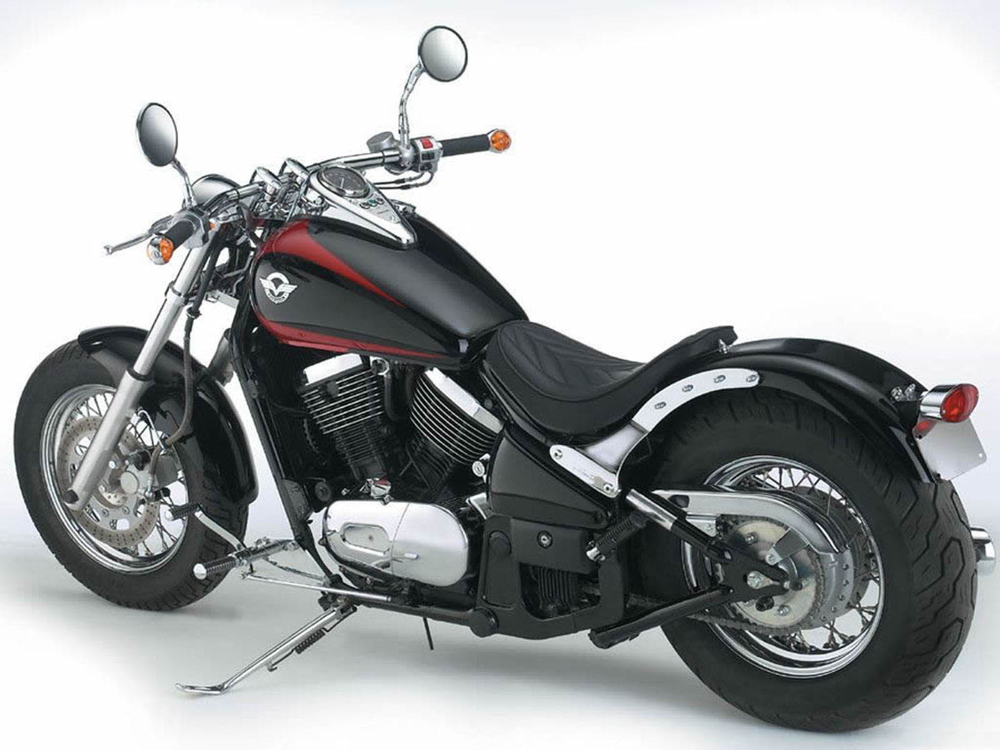
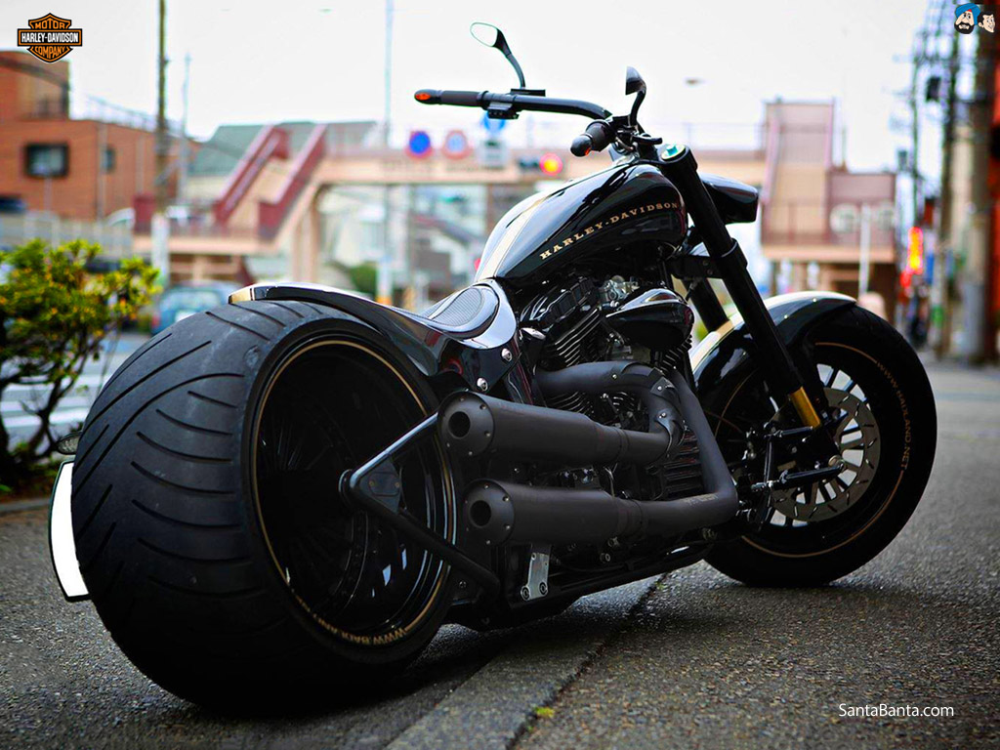

Motorcycles have always been the fantasy vehicle for the youth for a very long time; and in countries like India where transportation within the city often becomes a crucial issue, motorbikes become the savior. Motorbikes are very popular and due to that reason, a very active motorcycle industry have been created in the region. India makes their own motorcycles, also there are the world famous imports as well. Here’s a list of top 10 motorcycles brands in India that are taking a very active part in producing and marketing these two wheelers.
Hero Motorcorp Limited was previously known as Hero Honda; it was founded in 19 January 1982. With 5,842 employees, this public company has earned trust and faith of the Indian people. Hero Motorcorp basically produces motorcycles under 250 cc engine. Even though the previous company title appears to be same, however, Hero Motorcorp isn’t related to Honda of Japan.
Honda started operating in India since 1999 in a dedicated facility at Manesar, district Gurgaon. Honda Motorcycle and Scooter India (HMSI) is the branding Japanese Honda in India goes by and they are a complete subsidiary of the original Japanese company. Honda is the largest motorbike manufacturer in the world with worldwide recognition; the winged logo embedded on the fuel tank makes anyone take higher faith on that motorbike. From commuter to sports, Honda makes everything.

Bajaj Auto was founded on 1944; and all these years Bajaj has produced very high quality two and three wheeler vehicles. Back in 1960, Bajaj went public and their 100,000th vehicle was sold on 1970 – in respect to that time, the rise in their business was pretty fast. Apart from India, Bajaj is now operating in a total of 50 countries.


TVS Motor Company remains in one of the top three two-wheeler vehicle manufacturer company; TVS manufactures three-wheelers as well. The company has made annual revenue of Rs. 10,098 in the fiscal cycle of 2013-14; while the number of annual sales unit is around 2.5 million. TVS Motor Company exports these vehicles to other countries as well; they are the 2nd largest exporter in India.

Royal Enfield has subsidiaries in India, while the company is actually a British motorcycle manufacturing company. Royal Enfield was established more than a century ago on 1893; being one of the oldest companies Royal Enfield has earned riders’ trust all over the heart. Eicher Group is incorporated in the process of manufacturing Royal Enfield motorcycles in Bangladesh.


India Yamaha Motor Private Limited had been formed in 2008 under the subsidiary of Japanese Yamaha Motor Company. With the deals signed up, IYM now has the authority to manufacture Yamaha motorcycles in Indian soil. The youth of India absolutely loves Yamaha motorbikes, thus having a local manufacturing plant actually helped both the company and the consumers.


Suzuki Motor Corporation was formed back in 1909, it’s been more than 100 years since they’ve been operating worldwide. However, the Indian subsidiary was formed in accordance with Maruti; which was previously named as MarutiUdyog and now being called Maruti Suzuki. India HQ are based in Gurgaon, and they have produced more than 11 million units of various sized vehicles till 2011.
KTM is based in Austria and it was established back in 1934 by Hans Trunkenpolz. However, after Bajaj Auto Limited had acquired 14.5% stake of KTM; this motorbike got a fluent access to the Indian market and gained popularity as well.

Mahindra makes all sorts of vehicles from motorcycles to military movement vehicles for the Indian government. They hold 51% subsidiary of Italian Peugeot Motorcycles as well.


Harley-Davidson subsidiary in India is completely owned and operated by Harley-Davidson themselves; based in Gurgaon, Haryana. Operation in India had begun since 6th of May, 2010.
  